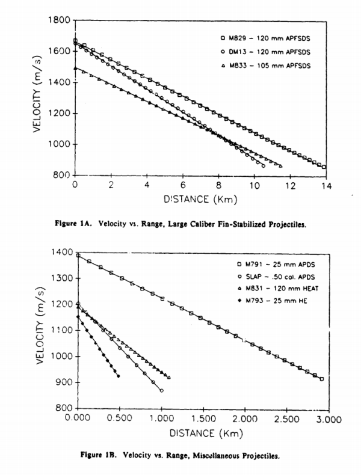

【海軍】談超音速彈丸
2018-02-05 10:20:00
原文网址：https://blog.udn.com/MengyuanWang/110139713
我在前一篇文章討論共軍的新電磁炮時，提到不論初速多高，任何彈丸的海平面平射有效射程都不可能超過40公里。結果自然有人質疑這個結論（不盲目迷信權威，是件好事，即使這個權威就是我），但是因爲這種流體動力學的問題，沒有簡單的理論解，現象極度複雜，我無法在留言欄的有限空間裏好好解釋。考慮了一會兒，覺得雖然有點太專精，但是一般軍迷和媒體都可能會對超音速彈丸受空氣阻力而減速的問題有興趣，卻又從沒有人把它科普過，所以我雖不是彈道學專家，還是以物理人的身份討論一番。不是理工出身的讀者，可以徑行忽略這篇文章。
一般科普文章談到空氣阻力，都說阻力= ρ * A * Cd * v^2 / 2 (v是速度，ρ是空氣密度，A是物體的橫截面），那麽我們只要測量阻力係數Cd，就可以知道在不同速度下，阻力有多大。換句話說，在空氣中穿行的物體，形狀可以很複雜，尺寸大小也各自不同，但是這些影響空氣阻力的種種因素（除了速度、空氣密度和橫截面積之外），全部被包容到一個係數裏去了。例如汽車的Cd，一般轎車在0.28左右，休閑車是0.35，皮卡則接近0.4。這樣的公式，只有在Cd不隨速度變化的前提下才有大用；很巧的是，當速度低於音速時（但不是太接近0），這是一個很好的近似。
然而隨著速度的提高，空氣阻力隨速度的變化，就成爲高度非綫性的。下面的圖是把前面所提的阻力方程式推廣到較大的速度範圍後，畫出Cd隨速度而變的函數。可以看出有四個主要的區域：A）在Mach 0.85以下，Cd基本是一個定值，這是前面提到的，爲什麽會定義Cd這個阻力係數的原因（也是爲什麽民航客機的巡航速度一般都在Mach 0.7-0.85之間）；B）從Mach 0.85到Mach 1.1之間，Cd大幅提高，這是因爲音爆激波開始形成，1940年代所謂的“音障”就是研究人員對這個一面墻似的阻力增加所做的描述；C）從Mach 1.1到Mach 5之間，Cd又開始慢慢降低，這段函數其實很接近反比曲綫，換句話説，在這個區間，空氣阻力其實是與速度成簡單正比的（之所以會有這樣的簡單結果，是因爲彈丸的外形不複雜，激波阻力主宰了它們減速的過程），但是科學界因爲約定成俗，仍然繼續使用與速度平方成正比的老公式；D）雖然圖中沒有顯示出來（因爲這張圖裏的兩條曲綫對應著兩種不同的步槍彈，它們的槍口初速只有Mach 3出頭），但是在Mach 5以上，Cd又成為一個定值，一般是在低速數值的一到兩倍之間，視物體本身的形狀和大小而定（物體越粗短，這個比值越高）。

這是一個典型的彈丸阻力係數對速度的函數，縱軸是Cd，橫軸是Mach數。一般會達到超音速的東西，不是彈丸，就是火箭和飛機；火箭和彈丸的函數曲綫比較相似，但是飛機因爲有機翼有攻角（必須產生升力，因此又多了與升力對應的阻力），要更複雜得多，我不在此討論。
軍迷讀者應該常常看到所謂的“亞音速”（或者“次音速”，“Subsonic”）、“穿音速”（“Transonic”）、“超音速”（“Supersonic"）和“高超音速”（“Hypersonic”）等詞匯，它們的定義來源正是上面所描述的空氣阻力係數作爲速度的函數曲綫，有不同形狀的A、B、C和D四個區間。
好，我們對空氣阻力和速度的關係有了基本的瞭解，現在可以回頭來討論本文的主題，也就是電磁炮的彈丸在海平面空氣中的減速現象。目前實用電磁炮可能達到的初速，頂多是Mach 7，更可能是Mach 5，所以主要是在前面所提的C（超音速）區間。如前所述，在這個區間，空氣阻力其實是與速度成簡單正比的。學過大一微積分的讀者，可以試著從這個正比關係來推導彈丸減速的規律，你們應該會發現，彈丸速度會隨距離而做綫性損失；但是損失的斜度視彈丸的形狀而定，必須從實驗求得。

這兩張圖來自1990年美國陸軍彈道實驗室（US Army Ballistic Research Laboratory）的一篇論文（參見http://www.dtic.mil/dtic/tr/fulltext/u2/a224217.pdf ，已經解密了）。圖1A是三種APFSDS（翼穩脫殼穿甲彈，亦即阻力極小的次口徑長杆飛行物）的速度對距離函數，圖1B則對應著幾種小口徑彈丸。它們都高度符合綫性關係，可見在超音速區間空氣阻力與速度成簡單正比是一個很好的近似。
這裏我們先看看圖1A的最上方曲綫和圖1B的最下方曲綫，分別對應著極爲細長的M829（即M1坦克所用的120毫米穿甲彈）和比較粗短的M793（是典型的小口徑高爆彈丸）。我的估計是前者的斜率是-0.13（單位是Mach/km，亦即每公里損失的Mach數），後者的斜率則是-1.3，剛好高了10倍。人類可以做出來的海軍艦炮彈丸，只要重量在30千克以下，不論是火炮還是電磁炮，在海平面Mach 1.1到Mach 5之間的速度損失率，基本都應該在這兩個數值之間。以下的討論將取速度衰減係數k = 0.13來代表大型次口徑長杆動能彈，用k = 0.3來代表典型的大口徑高爆彈。
現有的典型海軍艦炮，例如美軍的Mark 45五寸炮，發射高爆彈的初速是Mach 2.3（如果要改用APFSDS，因爲彈丸較輕，初速應該更高，可能可以接近Mach 3；120毫米和125毫米的陸軍坦克炮，發射APFSDS都可以達到Mach 5），有效射程號稱是24公里，但是這其實早已是曲射了，速度也掉到音速之下。荷蘭的Goalkeeper近防炮發射次口徑脫殼彈的初速是Mach 3.3，有效射程2公里。上圖中最接近它形狀和大小的，是M791（1B裏的最上方綫），對應著大約k = 0.5，所以我們可以估計終端速度是3.3 - 0.5 * 2 ≈ Mach 2.3，這才是平射彈應有的最低水平。陸軍的坦克炮也是同樣的道理，M829的初速是Mach 4.9，k值是前述的0.13，在4公里的有效射程外，終端速度還有Mach 4.4，陸軍卻不吹噓更高的射程了。
如果電磁炮發射APFSDS，那麽40公里外的Mach數損失是0.13*40=5.2，即使初速是Mach 7（請注意，Mach 5以上這個公式其實已經不適用，實際的阻力與速度平方成正比，比速度正比更高得多，所以Mach數損失應該高於5.2，更精確的估算是5.5左右，方法參見下一個段落），終端速度也只在Mach 1.8以下（實際上是Mach 1.5），還不如雄風三型飛彈，但是卻沒有任何高爆藥，所以其破壞力也就只是一個小洞（讀者請想想雄三的純動能損害還不足以擊毀一艘小漁船，何況炮彈比飛彈更小了一百倍左右）。如果這個電磁炮平射高爆彈，那麽17公里外的Mach數損失就已經超過0.3*17=5.1，Mach 7的初速更是完全沒有意義。
同樣用大一微積分，可以簡單求得在Mach 5以上，因爲阻力是與速度平方成正比，速度對距離會成指數下降，亦即v ∝ e^(-x/D)。考慮APFSDS做爲最低阻力的例子，可以求得D=5/0.13 ≈ 40公里（嘿嘿，你們以爲40公里是我隨口亂説的嗎？）；換句話説，在Mach 5以上，每40公里，速度降低為原本的37%（這是Euler常數e的倒數）。所以如果在40公里外，要求終端速度為Mach 5，那麽初速必須是5 * e ≈ Mach 14。別説這是21世紀身管材料科技不可能達到的高度，就算外星人送給我們新的超級耐磨耐熱材料，能做出Mach 14的電磁炮，空氣阻力所造成的摩擦生熱也達到Mach 5的八倍，足以融化鎢芯彈丸。
【後註一】因爲在留言欄談起來，我順便提一提。要算曲射的射程比較麻煩，首先必須知道大氣密度對高度的函數，請參見下圖：

這個函數曲綫很類似一個指數，我取ρ ∝ e^(-z/H)，這裏H可以從圖上直接讀出，大約是7.7公里；換句話説，每上升7.7公里，大氣密度減低為原本的37%。然後也不須要寫程式來解那套微分方程組，Excel這種電子表格已經綽綽有餘。我放了幾個傳統火炮發射大口徑（120-130毫米）高爆彈的初速、射高和射程數據，反推到的速度衰減係數k都是0.3，這就是本文稍早選擇k = 0.3來代表大口徑高爆彈的理論基礎。
至於美軍那門Mach 5初速（對應著炮口動能=32MJ，這是因爲他們用的彈丸重22千克，剛好和120、122、125毫米口徑的高爆彈類似，所以前面我選用120-130毫米口徑的火炮彈丸來估算出k = 0.3，是有道理的）的電磁炮，如果不用火箭助推和滑翔增程，最大的自由彈道射程是多少呢？我的計算結果是55公里，對應著58°的發射仰角；這剛好是廠商吹噓的最大射程220公里（120海里）的1/4，只比初速大約Mach 2.7的既有155火炮發射Base Bleed彈丸（底排彈雖然看來有火焰，其實不是火箭助推，所用的火藥很少；BB的用處，是吹走彈丸後方的低壓區，以避免Karman Vortex Street，也就是造成旗幟在風中飄揚的那個渦流作用；我以後會寫專文介紹）多出13公里，可見靠增加初速來提高射程，是件事倍功半的傻事（海軍實在應該先問問陸軍，明明已經有Mach 5的平射坦克炮，爲什麽不把同樣的技術應用在曲射榴彈炮上）。換句話說，電磁炮連用在遠程曲射對地轟擊，都不見得是效費比最高的方案。
【後註二】留言欄裏，有讀者提起一戰時代的巴黎炮，初速接近Mach 5，彈丸重152千克，有120公里以上的射程（歷史記錄不太確定）。我的回答已經暗示了（但沒有明説，所以在這裏講清楚），22千克的彈丸初速到達Mach 5之後，要增加自由射程，額外的動能其實最好是用來增大彈丸而不是提高初速，因爲前者可以減低速度衰減係數k，而後者卻會提高k（即從綫性減速變成指數衰減）。那麽電磁炮的設計者爲什麽反物理定律而行呢？這其實是商業考慮：電磁炮轉化能量的效率比火炮低很多，所以總動能有嚴格的上限，但是火炮要達到Mach 5並不難，電磁炮能量小、射速低、設備昂貴龐大複雜，基本一無是處，唯一的賣點在於有可能達到Mach 7，所以賣家的忽悠只好圍繞著這個唯一的特點來做文章，那麽彈丸就只能拼命輕量化，不能超過22千克。
目前電磁炮的原型機只達到32MJ的炮口動能，在可見的未來，不會超過64MJ，我們可以拿這些數據來和歷史上的幾個著名火炮做對比：
1）巴黎炮：彈重152千克，初速Mach 4.9，動能220MJ；
2）大和號的18寸炮：穿甲彈重1460千克，初速Mach 2.3，動能440MJ；
3）Gustav 800毫米炮：穿甲彈重7100千克，初速Mach 2.0，動能1840MJ。
當然，後兩者不是為射程而優化的，但是它們卻用二戰時代的技術達到了電磁炮完全不能企及的動能水平，又一次地曝露了電磁炮相對於火炮技術的局限性。至於火炮針對射程優化之後，能達到什麽程度？Bull博士在被以色列暗殺之前，用1980年代的技術為伊拉克設計了兩型火炮，叫做Project Babylon，其中第一代的小號炮叫做Baby Babylon，口徑350毫米，自由彈道射程750公里，我的Excel電子表格說初速必須在Mach 9以上，假設是Mach 9，彈重700千克，那麽炮口動能是3300MJ，比電磁炮的極限高出50倍。